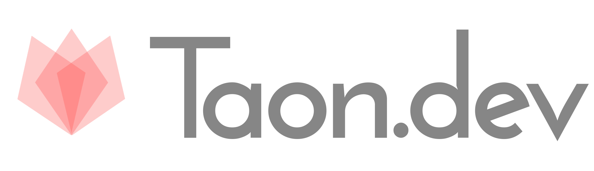

Start

TAON Typescript Angular Orm Node )
( ALPHA VERSION - For early testing and feedback only. )
Taon 🔥🔥🔥 is a solution (global cli tool & framework & cloud) for
+ TypesScript isomorphic libraries/backends/frontends
+ Angular libraries and PWA-s
+ Databases with Orm (TypeORM)
- sql.js - NodeJs Server Mode
- sql.js - WEBSQL Server Mode (backend in browser)
- mysql - Mysql Server Mode (inside docker)
+ NodeJS backends
+ Electron desktop apps
+ Ionic mobile apps
+ Visual Studio Code plugins
+ Documentation:
- MkDocs beautifull material wrapper for *.md docs files
- Storybook ui elements documentation
- Compodoc docs from comments
backend/frontend *isomorphic apps/libs.
Initial requirements of taon
-
Installed git (on windows only supported gitbash or new powershell pwsh)
-
Increased watchers limit (only on linux):
- Installed python3
and mkdocs:
Windwos/Linux
MacOsSupported OS-es:
- Win10, Win11 (gitbash)
- MacOS
- Linux
Required version of NodeJS
- Windows 10/11 (gitbash,pwsh): >= v18
- MacOS: >= v18
- Linux: >= v18
How to install taon
How to uninstall taon from local machine
Taon stores a big global container (in ~/.taon) for npm packages
that are being shared across all taon projects.
Projects that are part of taon.dev:
- taon https://github.com/darekf77/taon
- framework library
- tnp https://github.com/darekf77/tnp
- main cli / code structuring tool
- taon-core https://github.com/darekf77/tnp-core
- essential/core helpers for all projects
- taon-class-helpers https://github.com/darekf77/typescript-class-helpers
- helpers for OOP class names based
- taon-config https://github.com/darekf77/tnp-config
- config/models for general purpose
- taon-cli https://github.com/darekf77/tnp-cli
- helpers/abstraction for global cli tools NodeJS based
- taon-helpers https://github.com/darekf77/tnp-helpers
- extended core helpers
- taon-json https://github.com/darekf77/json10
- handle JSON in better way
- taon-logger https://github.com/darekf77/ng2-logger
- logging in isomorphic apps
- taon-typeorm https://github.com/darekf77/taon-typeorm
- TypeOrm fork
- taon-type-sql https://github.com/darekf77/taon-type-sql
- strongly type sql
- taon-rest https://github.com/darekf77/ng2-rest
- easy rest api
- taon-incremental-watcher https://github.com/darekf77/incremental-compiler
- abstraction for incremental builders NodeJS based
- taon-storage https://github.com/darekf77/taon-storage
- ts decorators based storage solution
- taon-walk-object https://github.com/darekf77/lodash-walk-object
- iterate over deep properties in object
Global npm dependencies installed with taon
Installation happens when you first time use taon
[
// tool for minifying js (WILL EB REMOVED SOON FROM GLOBAL DEPS)
{ name: 'ncc', version: '0.36.0', installName: '@vercel/ncc' },
// zip extractor.. no needed anymore (WILL EB REMOVED SOON FROM GLOBAL DEPS)
{ name: 'extract-zip', version: '1.6.7' },
// copy catalogs (WILL EB REMOVED SOON FROM GLOBAL DEPS)
{ name: 'cpr' },
// check version of your nodejs
{ name: 'check-node-version' },
// alternative not npx ( it wil not download package from npm if is not installed )
{ name: 'npm-run', version: '4.1.2' },
//handy for removing files
{ name: 'rimraf', version: '3.0.2' },
//handy for recreating catalogs
{ name: 'mkdirp' },
// rename files in build (WILL EB REMOVED SOON FROM GLOBAL DEPS)
{ name: 'renamer', version: '2.0.1' },
// run/watch node server (WILL EB REMOVED SOON FROM GLOBAL DEPS)
{ name: 'nodemon' },
// check circural deps (WILL EB REMOVED SOON FROM GLOBAL DEPS)
{ name: 'madge' },
// package manager
{ name: 'yarn' },
// https server with --base-href
{ name: 'taon-http-server' },
// code formatter
{ name: 'prettier' },
// process killer
{ name: 'fkill', installName: 'fkill-cli' },
// for unit tests runner (WILL EB REMOVED SOON FROM GLOBAL DEPS)
{ name: 'mocha' },
// for unit tests runner
{ name: 'jest' },
// run ts code directly
{ name: 'ts-node' },
// oficial vsce package striped out from some restrictions
{ name: 'taon-vsce' },
// analyze you final bundle (WILL EB REMOVED SOON FROM GLOBAL DEPS)
{ name: 'webpack-bundle-analyzer' },
// strip types from TypeScript
{ name: 'babel', installName: 'babel-cli' },
// create js bundle that are not human readable (WILL EB REMOVED SOON FROM GLOBAL DEPS)
{ name: 'javascript-obfuscator', version: '4' },
// minify js (WILL EB REMOVED SOON FROM GLOBAL DEPS)
{ name: 'uglifyjs', installName: 'uglify-js' },
]